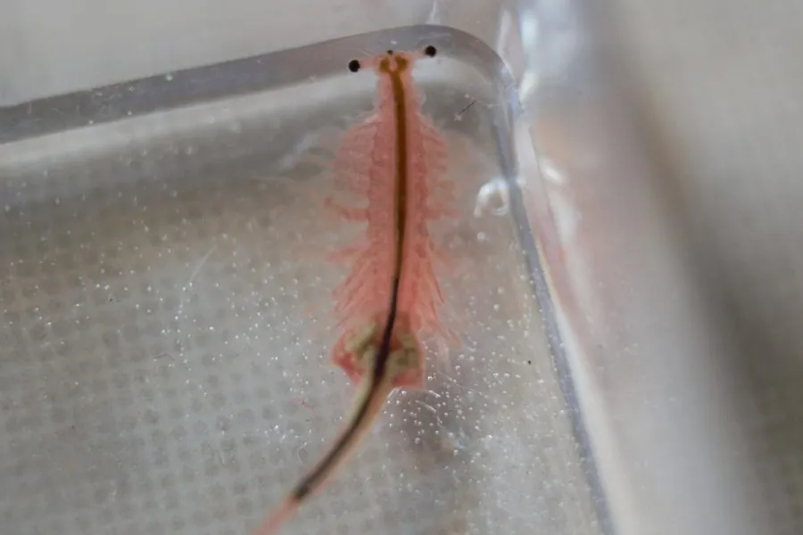

甲壳动物 · 动物界
卤虫 Artemia salina

生活在高盐湖泊中的小型甲壳动物，休眠卵可保存多年，孵出的幼体是水产育苗的重要饵料，俗称丰年虾。
- 分类
- 门节肢动物门纲鳃足纲目无甲目科卤虫科属卤虫属
- 栖息环境
- 盐湖、盐田和沿海高盐水体，耐极高盐度
- 地理分布
- 全球盐湖和盐田，如中国西北盐湖、美国大盐湖
- 保护级别
- 暂无评估
物种志
卤虫体长约 8–10 mm，身体细长分节，有一对带柄的复眼，胸肢多对、呈叶片状，用于游泳和滤食，体色随盐度和食物变化，从淡红到橙红都有。
它生活在盐湖、盐田和沿海高盐水体中，能耐受很高的盐度，取食藻类和有机颗粒。环境恶化时，卤虫产生休眠卵，休眠卵能耐受干燥、高温和低温，可保存多年，遇到适宜盐水就孵化。卤虫的休眠卵和幼体是水产养殖中鱼虾蟹育苗的重要饵料，全球年产量很大，被大量用于孵化丰年虾。它也是盐湖生态系统的关键物种，为火烈鸟等水鸟提供食物。卤虫的休眠卵在市场上以罐装形式出售，养鱼爱好者买回后加水即可孵化出丰年虾。
形态与习性
- 食性滤食藻类和有机颗粒
- 体长约 8–10 mm
- 耐盐能耐受很高盐度的水体
- 休眠卵可耐受干燥、高温和低温，保存多年
- 经济水产育苗的重要饵料，俗称丰年虾
- 生态作用盐湖食物链关键物种，喂食火烈鸟等水鸟
趣味知识
- 卤虫的休眠卵能保存多年，遇到盐水就能孵化。
- 水产养殖中孵化的丰年虾，多数就是卤虫的幼体。
- 火烈鸟的红色羽毛，与它们大量取食卤虫等富含色素的食物有关。